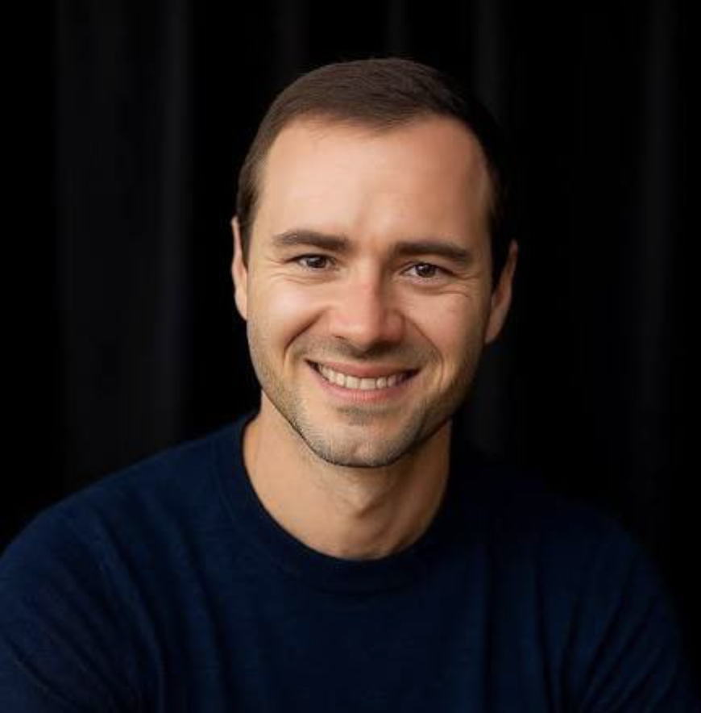
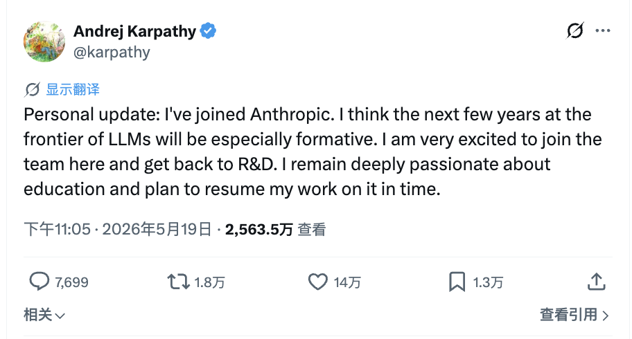
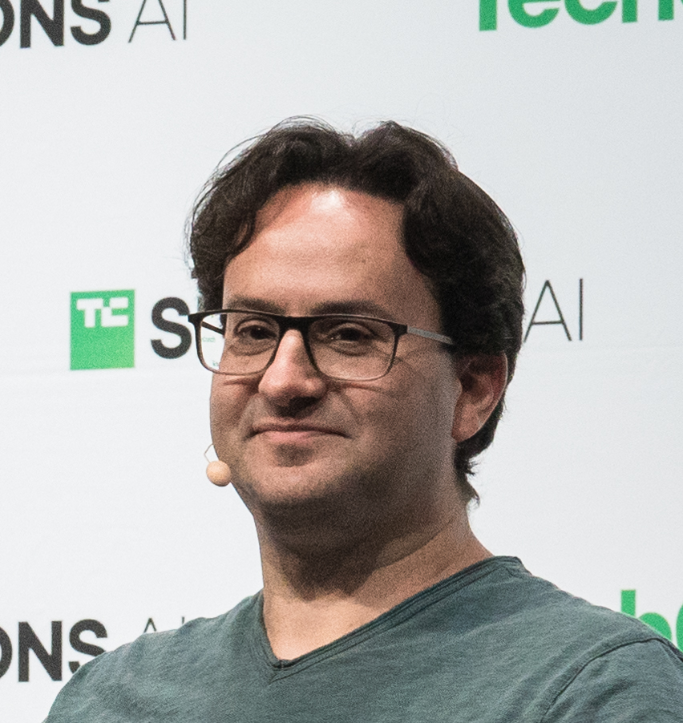

<template id="seg05-merge-template">
  <div data-composition-id="seg05-merge" data-width="1920" data-height="1080">
    <style>
      [data-composition-id="seg05-merge"] {
        position: absolute;
        top: 0; left: 0;
        width: 1920px;
        height: 1080px;
        background: transparent;
        color: #2B2622;
        font-family: "Noto Sans SC", "Inter", sans-serif;
      }
      [data-composition-id="seg05-merge"] .sec {
        position: absolute;
        top: 0; left: 0;
        width: 1920px;
        height: 1080px;
      }
      [data-composition-id="seg05-merge"] .scene-content {
        width: 100%;
        height: 100%;
        box-sizing: border-box;
        position: relative;
      }
      [data-composition-id="seg05-merge"] .chrome {
        font-family: "Noto Sans SC", "Inter", sans-serif;
        font-weight: 800;
        letter-spacing: 0.005em;
        line-height: 1.05;
        background-image: linear-gradient(180deg,
          #2B2622 0%, #4a3d33 18%, #806c5b 43%, #c8aa8f 52%, #6b5a4d 67%, #2B2622 100%);
        -webkit-background-clip: text;
        background-clip: text;
        -webkit-text-fill-color: transparent;
        color: transparent;
      }
      [data-composition-id="seg05-merge"] .hot {
        background-image: linear-gradient(180deg, #f5b39a 0%, #d97757 48%, #8b3d28 100%);
        -webkit-background-clip: text;
        background-clip: text;
        -webkit-text-fill-color: transparent;
        color: transparent;
        filter: drop-shadow(0 0 18px rgba(217, 119, 87, 0.32));
      }
      [data-composition-id="seg05-merge"] .mono {
        font-family: "JetBrains Mono", monospace;
      }
      [data-composition-id="seg05-merge"] .chip {
        display: inline-flex;
        align-items: center;
        justify-content: center;
        border-radius: 999px;
        border: 1.5px solid rgba(217, 119, 87, 0.48);
        background: rgba(217, 119, 87, 0.10);
        color: #9A4634;
        font-weight: 650;
        white-space: nowrap;
      }

      /* ─────────────────── SEC A · 钥匙转身 ─────────────────── */
      [data-composition-id="seg05-merge"] .sec-a .scene-content {
        padding: 88px 130px 90px;
        display: grid;
        grid-template-columns: 0.92fr 1.18fr;
        align-items: center;
        gap: 70px;
      }
      [data-composition-id="seg05-merge"] .a-portrait-wrap {
        position: relative;
        display: flex;
        flex-direction: column;
        gap: 22px;
        align-items: flex-start;
      }
      [data-composition-id="seg05-merge"] .a-portrait {
        position: relative;
        width: 460px;
        height: 580px;
        border-radius: 24px;
        overflow: hidden;
        box-shadow: 0 28px 64px rgba(43, 38, 34, 0.22);
        opacity: 0;
      }
      [data-composition-id="seg05-merge"] .a-portrait img {
        width: 100%;
        height: 100%;
        object-fit: cover;
        object-position: 50% 18%;
        filter: saturate(1.02);
      }
      [data-composition-id="seg05-merge"] .a-portrait .a-portrait-vignette {
        position: absolute;
        inset: 0;
        background: radial-gradient(circle at 50% 35%, transparent 55%, rgba(43,38,34,0.18) 100%);
        pointer-events: none;
      }
      [data-composition-id="seg05-merge"] .a-portrait-label {
        display: flex;
        align-items: center;
        gap: 14px;
        padding: 12px 22px;
        font-size: 24px;
        color: #5A4F46;
        background: rgba(247, 242, 234, 0.78);
        border: 1px solid rgba(43, 38, 34, 0.14);
        border-radius: 14px;
        opacity: 0;
      }
      [data-composition-id="seg05-merge"] .a-portrait-label img {
        width: 28px;
        height: 28px;
      }
      [data-composition-id="seg05-merge"] .a-right {
        display: flex;
        flex-direction: column;
        gap: 32px;
      }
      [data-composition-id="seg05-merge"] .a-headline {
        font-size: 76px;
        line-height: 1.08;
        font-weight: 800;
        color: #2B2622;
        opacity: 0;
      }
      [data-composition-id="seg05-merge"] .a-headline .strike-target {
        position: relative;
        display: inline-block;
      }
      [data-composition-id="seg05-merge"] .a-headline .strike-target::after {
        content: '';
        position: absolute;
        left: -4px;
        right: -4px;
        top: 52%;
        height: 6px;
        background: #8b3d28;
        transform: scaleX(0);
        transform-origin: left center;
      }
      [data-composition-id="seg05-merge"] .a-source-chip {
        align-self: flex-start;
        padding: 10px 20px;
        font-size: 22px;
        opacity: 0;
      }
      [data-composition-id="seg05-merge"] .a-joining-tweet {
        position: relative;
        width: 760px;
        border-radius: 16px;
        overflow: hidden;
        background: #fafafa;
        border: 1px solid rgba(43, 38, 34, 0.16);
        box-shadow: 0 18px 44px rgba(43, 38, 34, 0.18);
        opacity: 0;
      }
      [data-composition-id="seg05-merge"] .a-joining-tweet img {
        width: 100%;
        height: auto;
        display: block;
      }
      [data-composition-id="seg05-merge"] .a-joseph-panel {
        position: relative;
        width: 760px;
        padding: 22px 26px;
        background: rgba(247, 242, 234, 0.96);
        border: 1.5px solid rgba(217, 119, 87, 0.45);
        border-radius: 16px;
        box-shadow: 0 18px 40px rgba(43, 38, 34, 0.14);
        display: flex;
        flex-direction: column;
        gap: 14px;
        opacity: 0;
      }
      [data-composition-id="seg05-merge"] .a-joseph-header {
        display: flex;
        align-items: center;
        gap: 12px;
      }
      [data-composition-id="seg05-merge"] .a-joseph-avatar {
        width: 38px;
        height: 38px;
        border-radius: 50%;
        background: linear-gradient(135deg, #b89f87, #806c5b);
        display: flex;
        align-items: center;
        justify-content: center;
        color: #fdf6ec;
        font-size: 17px;
        font-weight: 700;
      }
      [data-composition-id="seg05-merge"] .a-joseph-name {
        display: flex;
        flex-direction: column;
        line-height: 1.15;
      }
      [data-composition-id="seg05-merge"] .a-joseph-name .name {
        font-size: 19px;
        font-weight: 700;
        color: #2B2622;
      }
      [data-composition-id="seg05-merge"] .a-joseph-name .handle {
        font-size: 15px;
        color: #5A4F46;
      }
      [data-composition-id="seg05-merge"] .a-joseph-quote {
        font-size: 22px;
        line-height: 1.45;
        color: #2B2622;
        font-family: "Noto Sans SC", "Inter", sans-serif;
      }
      [data-composition-id="seg05-merge"] .a-joseph-quote .hl-target {
        position: relative;
        display: inline;
        background: linear-gradient(90deg,
          rgba(217, 119, 87, 0) 0%,
          rgba(217, 119, 87, 0) 50%,
          rgba(217, 119, 87, 0.42) 50%,
          rgba(217, 119, 87, 0.42) 100%);
        background-size: 200% 100%;
        background-position: 100% 0%;
        background-repeat: no-repeat;
        padding: 0 2px;
      }
      [data-composition-id="seg05-merge"] .a-joseph-source {
        display: flex;
        align-items: center;
        gap: 10px;
        font-size: 14px;
        color: #806c5b;
      }
      [data-composition-id="seg05-merge"] .a-joseph-source .dot {
        width: 4px;
        height: 4px;
        border-radius: 50%;
        background: #806c5b;
      }
      [data-composition-id="seg05-merge"] .a-loop {
        position: absolute;
        left: 50%;
        top: 50%;
        transform: translate(-50%, -50%);
        width: 720px;
        opacity: 0;
        text-align: center;
      }
      [data-composition-id="seg05-merge"] .a-loop-row {
        display: flex;
        align-items: center;
        justify-content: center;
        gap: 26px;
        font-size: 38px;
      }
      [data-composition-id="seg05-merge"] .a-loop-node {
        padding: 18px 36px;
        border-radius: 18px;
        background: rgba(217, 119, 87, 0.10);
        border: 1.5px solid rgba(217, 119, 87, 0.55);
        color: #8b3d28;
        font-weight: 700;
      }
      [data-composition-id="seg05-merge"] .a-loop-svg {
        margin-top: 26px;
        width: 100%;
        height: 90px;
      }
      [data-composition-id="seg05-merge"] .a-loop-svg path {
        fill: none;
        stroke: #d97757;
        stroke-width: 4;
        stroke-linecap: round;
      }

      /* ─────────────────── SEC B · 伪命题 ─────────────────── */
      [data-composition-id="seg05-merge"] .sec-b .scene-content {
        display: flex;
        flex-direction: column;
        align-items: center;
        justify-content: center;
        padding: 90px 120px;
        gap: 60px;
      }
      [data-composition-id="seg05-merge"] .b-stage {
        position: relative;
        width: 100%;
        height: 660px;
        display: flex;
        align-items: center;
        justify-content: center;
      }
      [data-composition-id="seg05-merge"] .b-core-group {
        position: relative;
        width: 100%;
        height: 100%;
        display: flex;
        align-items: center;
        justify-content: center;
      }
      [data-composition-id="seg05-merge"] .b-core {
        position: relative;
        display: flex;
        flex-direction: column;
        align-items: center;
        gap: 24px;
      }
      [data-composition-id="seg05-merge"] .b-core-ball {
        width: 220px;
        height: 220px;
        border-radius: 50%;
        background: radial-gradient(circle at 35% 30%, #f5b39a 0%, #d97757 55%, #8b3d28 100%);
        box-shadow: 0 0 80px rgba(217, 119, 87, 0.6);
      }
      [data-composition-id="seg05-merge"] .b-core-label {
        font-size: 26px;
        color: #5A4F46;
        font-weight: 600;
      }
      [data-composition-id="seg05-merge"] .b-chips {
        position: absolute;
        inset: 0;
        pointer-events: none;
      }
      [data-composition-id="seg05-merge"] .b-chip {
        position: absolute;
        padding: 14px 26px;
        font-size: 26px;
        opacity: 0;
      }
      [data-composition-id="seg05-merge"] .b-chip.c1 { top: 12%; left: 22%; }
      [data-composition-id="seg05-merge"] .b-chip.c2 { top: 12%; right: 22%; }
      [data-composition-id="seg05-merge"] .b-chip.c3 { bottom: 14%; left: 22%; }
      [data-composition-id="seg05-merge"] .b-chip.c4 { bottom: 14%; right: 22%; }
      [data-composition-id="seg05-merge"] .b-triplet {
        position: absolute;
        inset: 0;
        display: flex;
        align-items: center;
        justify-content: center;
        gap: 80px;
        opacity: 0;
      }
      [data-composition-id="seg05-merge"] .b-mini {
        display: flex;
        flex-direction: column;
        align-items: center;
        gap: 28px;
      }
      [data-composition-id="seg05-merge"] .b-mini-logo {
        width: 260px;
        height: 260px;
        display: flex;
        align-items: center;
        justify-content: center;
        background: rgba(247, 242, 234, 0.55);
        border-radius: 28px;
        box-shadow: 0 14px 36px rgba(43, 38, 34, 0.10);
      }
      [data-composition-id="seg05-merge"] .b-mini-logo img {
        width: 210px;
        height: 210px;
        object-fit: contain;
        opacity: 0.92;
      }
      [data-composition-id="seg05-merge"] .b-mini-label {
        font-size: 22px;
        color: #5A4F46;
        font-family: "JetBrains Mono", monospace;
      }
      [data-composition-id="seg05-merge"] .b-strike-line {
        position: absolute;
        left: 12%;
        right: 12%;
        top: 50%;
        height: 4px;
        background: #8a7d70;
        transform: scaleX(0);
        transform-origin: left center;
        opacity: 0;
      }
      [data-composition-id="seg05-merge"] .b-deny {
        position: absolute;
        bottom: -32px;
        left: 50%;
        transform: translateX(-50%);
        font-size: 30px;
        color: #5A4F46;
        font-weight: 600;
        opacity: 0;
      }

      /* ─────────────────── SEC C · 反过来 ─────────────────── */
      [data-composition-id="seg05-merge"] .sec-c .scene-content {
        padding: 0;
        display: flex;
        flex-direction: column;
      }
      [data-composition-id="seg05-merge"] .c-upper {
        position: relative;
        width: 100%;
        height: 480px;
        background: #F7F2EA;
        border-bottom: 2px solid rgba(43, 38, 34, 0.15);
        display: flex;
        align-items: center;
        padding: 0 130px;
        gap: 50px;
        transform: scaleY(0);
        transform-origin: 50% 100%;
        opacity: 0;
      }
      [data-composition-id="seg05-merge"] .c-upper-portrait {
        width: 240px;
        height: 240px;
        border-radius: 50%;
        overflow: hidden;
        flex-shrink: 0;
        box-shadow: 0 20px 50px rgba(43, 38, 34, 0.18);
      }
      [data-composition-id="seg05-merge"] .c-upper-portrait img {
        width: 100%;
        height: 100%;
        object-fit: cover;
      }
      [data-composition-id="seg05-merge"] .c-upper-meta {
        display: flex;
        flex-direction: column;
        gap: 22px;
      }
      [data-composition-id="seg05-merge"] .c-upper-tag {
        font-size: 20px;
        color: #806c5b;
        font-family: "JetBrains Mono", monospace;
        letter-spacing: 0.06em;
      }
      [data-composition-id="seg05-merge"] .c-upper-title {
        font-size: 56px;
        font-weight: 800;
        color: #2B2622;
        line-height: 1.1;
      }
      [data-composition-id="seg05-merge"] .c-upper-title .hot {
        font-weight: 800;
      }
      [data-composition-id="seg05-merge"] .c-upper-chip {
        align-self: flex-start;
        padding: 12px 24px;
        font-size: 22px;
      }
      [data-composition-id="seg05-merge"] .c-lower {
        position: relative;
        width: 100%;
        height: 600px;
        background: #2A2520;
        color: #F0E5D2;
        display: flex;
        align-items: center;
        justify-content: center;
        padding: 0 130px;
        transform: scaleY(0);
        transform-origin: 50% 0%;
        opacity: 0;
      }
      [data-composition-id="seg05-merge"] .c-lower-grid {
        display: grid;
        grid-template-columns: repeat(2, 1fr);
        gap: 24px 28px;
        width: 100%;
        max-width: 1100px;
      }
      [data-composition-id="seg05-merge"] .cc-win {
        background: #1E1A16;
        border: 1px solid rgba(255, 255, 255, 0.10);
        border-radius: 12px;
        overflow: hidden;
        display: flex;
        flex-direction: column;
        opacity: 0;
      }
      [data-composition-id="seg05-merge"] .cc-win-bar {
        display: flex;
        align-items: center;
        gap: 8px;
        padding: 10px 14px;
        background: #15120F;
        border-bottom: 1px solid rgba(255, 255, 255, 0.08);
      }
      [data-composition-id="seg05-merge"] .cc-win-bar .dot {
        width: 11px;
        height: 11px;
        border-radius: 50%;
      }
      [data-composition-id="seg05-merge"] .cc-win-bar .dot.r { background: #ff5f57; }
      [data-composition-id="seg05-merge"] .cc-win-bar .dot.y { background: #febc2e; }
      [data-composition-id="seg05-merge"] .cc-win-bar .dot.g { background: #28c840; }
      [data-composition-id="seg05-merge"] .cc-win-bar .title {
        margin-left: 8px;
        font-family: "JetBrains Mono", monospace;
        font-size: 14px;
        color: rgba(240, 229, 210, 0.5);
      }
      [data-composition-id="seg05-merge"] .cc-win-body {
        padding: 18px 18px 22px;
        font-family: "JetBrains Mono", monospace;
        font-size: 18px;
        line-height: 1.55;
        color: #F0E5D2;
        min-height: 96px;
      }
      [data-composition-id="seg05-merge"] .cc-win-body .prompt {
        color: #d97757;
        font-weight: 600;
      }
      [data-composition-id="seg05-merge"] .cc-win-tag {
        padding: 8px 14px;
        font-size: 12px;
        font-family: "JetBrains Mono", monospace;
        color: rgba(240, 229, 210, 0.5);
        border-top: 1px dashed rgba(255, 255, 255, 0.08);
        letter-spacing: 0.06em;
      }
      [data-composition-id="seg05-merge"] .cc-win.evaluate {
        position: absolute;
        left: 50%;
        top: 50%;
        transform: translate(-50%, -50%) scale(1);
        width: 460px;
        z-index: 5;
        border: 2px solid rgba(217, 119, 87, 0.85);
        box-shadow: 0 0 70px rgba(217, 119, 87, 0.45);
        opacity: 0;
      }
      [data-composition-id="seg05-merge"] .c-glow-beam {
        position: absolute;
        left: 50%;
        bottom: 0;
        width: 60px;
        height: 600px;
        background: linear-gradient(180deg,
          rgba(217, 119, 87, 0) 0%,
          rgba(217, 119, 87, 0.30) 50%,
          rgba(217, 119, 87, 0.65) 100%);
        transform: translateX(-50%) scaleY(0);
        transform-origin: 50% 100%;
        filter: blur(8px);
        z-index: 4;
        opacity: 0;
      }
      [data-composition-id="seg05-merge"] .c-final {
        position: absolute;
        left: 50%;
        bottom: 38px;
        transform: translateX(-50%);
        font-size: 56px;
        font-weight: 800;
        letter-spacing: 0.02em;
        opacity: 0;
        z-index: 10;
      }

      /* ─────────────────── SEC D · 对比 + 回望 ─────────────────── */
      [data-composition-id="seg05-merge"] .sec-d .scene-content {
        padding: 90px 130px;
        position: relative;
      }
      /* D-1 双卡对比 */
      [data-composition-id="seg05-merge"] .d-compare {
        display: grid;
        grid-template-columns: 1fr 1fr;
        gap: 60px;
        height: 100%;
        opacity: 0;
      }
      [data-composition-id="seg05-merge"] .d-card {
        background: rgba(247, 242, 234, 0.6);
        border: 1px solid rgba(43, 38, 34, 0.16);
        border-radius: 22px;
        padding: 44px 40px;
        display: flex;
        flex-direction: column;
        gap: 24px;
        opacity: 0;
      }
      [data-composition-id="seg05-merge"] .d-card.right {
        background: rgba(247, 242, 234, 0.92);
        border-color: rgba(217, 119, 87, 0.50);
        box-shadow: 0 22px 56px rgba(217, 119, 87, 0.16);
      }
      [data-composition-id="seg05-merge"] .d-card-tag {
        font-size: 22px;
        color: #806c5b;
        font-family: "JetBrains Mono", monospace;
        letter-spacing: 0.08em;
      }
      [data-composition-id="seg05-merge"] .d-card-title {
        font-size: 52px;
        font-weight: 800;
        color: #2B2622;
        line-height: 1.08;
      }
      [data-composition-id="seg05-merge"] .d-card-body {
        font-size: 26px;
        color: #5A4F46;
        line-height: 1.5;
      }
      [data-composition-id="seg05-merge"] .d-spec {
        display: flex;
        flex-direction: column;
        gap: 8px;
        font-family: "JetBrains Mono", monospace;
        font-size: 20px;
        color: #5A4F46;
      }
      [data-composition-id="seg05-merge"] .d-spec-row {
        display: flex;
        align-items: center;
        gap: 14px;
        opacity: 0;
      }
      [data-composition-id="seg05-merge"] .d-spec-row .bullet {
        width: 6px;
        height: 6px;
        border-radius: 50%;
        background: #806c5b;
      }
      [data-composition-id="seg05-merge"] .d-card-logos {
        display: flex;
        flex-wrap: wrap;
        gap: 12px;
        margin-top: 14px;
      }
      [data-composition-id="seg05-merge"] .d-mini-logo {
        display: inline-flex;
        align-items: center;
        gap: 8px;
        padding: 8px 14px;
        background: rgba(43, 38, 34, 0.08);
        border-radius: 999px;
        font-size: 16px;
        color: #5A4F46;
        font-family: "JetBrains Mono", monospace;
      }
      [data-composition-id="seg05-merge"] .d-mini-logo img {
        width: 18px;
        height: 18px;
      }
      [data-composition-id="seg05-merge"] .d-card.right .d-mini-logo.alone {
        background: rgba(217, 119, 87, 0.14);
        border: 1px solid rgba(217, 119, 87, 0.55);
        color: #8b3d28;
        padding: 12px 22px;
        font-size: 20px;
        font-weight: 600;
      }
      [data-composition-id="seg05-merge"] .d-card-footer {
        font-size: 22px;
        color: #806c5b;
        font-family: "JetBrains Mono", monospace;
        letter-spacing: 0.04em;
        margin-top: auto;
      }
      [data-composition-id="seg05-merge"] .d-card.right .d-card-footer {
        color: #d97757;
        font-weight: 600;
      }

      /* D-2 时间轴 */
      [data-composition-id="seg05-merge"] .d-timeline {
        position: absolute;
        inset: 90px 130px;
        display: flex;
        flex-direction: column;
        align-items: center;
        justify-content: center;
        gap: 32px;
        opacity: 0;
      }
      [data-composition-id="seg05-merge"] .d-tl-svg {
        position: relative;
        width: 100%;
        height: 600px;
      }
      [data-composition-id="seg05-merge"] .d-tl-axis {
        position: absolute;
        left: 50%;
        top: 0;
        bottom: 0;
        width: 4px;
        background: rgba(43, 38, 34, 0.18);
        transform: translateX(-50%) scaleY(0);
        transform-origin: 50% 100%;
      }
      [data-composition-id="seg05-merge"] .d-tl-light {
        position: absolute;
        left: 50%;
        top: 0;
        bottom: 0;
        width: 12px;
        background: linear-gradient(180deg,
          rgba(217, 119, 87, 0) 0%,
          rgba(217, 119, 87, 0.65) 50%,
          rgba(217, 119, 87, 0) 100%);
        transform: translateX(-50%) translateY(100%);
        opacity: 0;
        filter: blur(4px);
      }
      [data-composition-id="seg05-merge"] .d-tl-marker {
        position: absolute;
        left: 50%;
        transform: translateX(-50%);
        display: flex;
        align-items: center;
        gap: 22px;
        opacity: 0;
      }
      [data-composition-id="seg05-merge"] .d-tl-marker .dot {
        width: 18px;
        height: 18px;
        border-radius: 50%;
        background: #d97757;
        box-shadow: 0 0 0 6px rgba(217, 119, 87, 0.18);
        flex-shrink: 0;
      }
      [data-composition-id="seg05-merge"] .d-tl-marker.n1 { top: 86%; }
      [data-composition-id="seg05-merge"] .d-tl-marker.n2 { top: 50%; }
      [data-composition-id="seg05-merge"] .d-tl-marker.n3 { top: 14%; }
      [data-composition-id="seg05-merge"] .d-tl-marker .side {
        position: absolute;
        display: flex;
        align-items: center;
        gap: 16px;
      }
      [data-composition-id="seg05-merge"] .d-tl-marker.n1 .side {
        right: 36px;
        flex-direction: row-reverse;
        text-align: right;
      }
      [data-composition-id="seg05-merge"] .d-tl-marker.n2 .side {
        left: 36px;
      }
      [data-composition-id="seg05-merge"] .d-tl-marker.n3 .side {
        right: 36px;
        flex-direction: row-reverse;
        text-align: right;
      }
      [data-composition-id="seg05-merge"] .d-tl-thumb {
        width: 180px;
        height: 110px;
        border-radius: 10px;
        overflow: hidden;
        background: #f0e6d4;
        border: 1px solid rgba(43, 38, 34, 0.18);
        box-shadow: 0 12px 28px rgba(43, 38, 34, 0.15);
        flex-shrink: 0;
      }
      [data-composition-id="seg05-merge"] .d-tl-thumb img {
        width: 100%;
        height: 100%;
        object-fit: cover;
      }
      [data-composition-id="seg05-merge"] .d-tl-thumb.portrait img {
        object-position: 50% 14%;
      }
      [data-composition-id="seg05-merge"] .d-tl-text {
        display: flex;
        flex-direction: column;
        gap: 6px;
      }
      [data-composition-id="seg05-merge"] .d-tl-text .date {
        font-size: 18px;
        font-family: "JetBrains Mono", monospace;
        color: #806c5b;
        letter-spacing: 0.06em;
      }
      [data-composition-id="seg05-merge"] .d-tl-text .label {
        font-size: 30px;
        color: #2B2622;
        font-weight: 700;
      }
      [data-composition-id="seg05-merge"] .d-final {
        position: absolute;
        left: 50%;
        bottom: 36px;
        transform: translateX(-50%);
        font-size: 58px;
        font-weight: 800;
        color: #2B2622;
        text-align: center;
        opacity: 0;
        letter-spacing: 0.005em;
        line-height: 1.1;
      }
      [data-composition-id="seg05-merge"] .d-final .hot {
        font-weight: 800;
      }

      /* ─────────────────── SEC E · ex-OpenAI 钩子 ─────────────────── */
      [data-composition-id="seg05-merge"] .sec-e {
        background: #1F1B17;
      }
      [data-composition-id="seg05-merge"] .sec-e .scene-content {
        position: relative;
        padding: 0;
      }
      [data-composition-id="seg05-merge"] .e-spotlight {
        position: absolute;
        inset: 0;
        background: radial-gradient(circle at 50% 50%, rgba(217, 119, 87, 0.10) 0%, rgba(31, 27, 23, 0.4) 38%, rgba(15, 12, 10, 0.96) 80%);
        opacity: 0;
      }
      [data-composition-id="seg05-merge"] .e-stage {
        position: absolute;
        inset: 0;
        display: flex;
        align-items: center;
        justify-content: center;
      }
      [data-composition-id="seg05-merge"] .e-anthropic {
        display: flex;
        flex-direction: column;
        align-items: center;
        gap: 18px;
        opacity: 0;
      }
      [data-composition-id="seg05-merge"] .e-anthropic img {
        width: 220px;
        height: auto;
        filter: brightness(0) invert(1);
      }
      [data-composition-id="seg05-merge"] .e-anthropic .name {
        font-size: 22px;
        color: rgba(247, 242, 234, 0.6);
        letter-spacing: 0.12em;
        font-family: "JetBrains Mono", monospace;
      }
      [data-composition-id="seg05-merge"] .e-portraits {
        position: absolute;
        inset: 0;
      }
      [data-composition-id="seg05-merge"] .e-port {
        position: absolute;
        display: flex;
        flex-direction: column;
        align-items: center;
        gap: 12px;
        width: 280px;
        opacity: 0;
      }
      [data-composition-id="seg05-merge"] .e-port.top { top: 80px; left: 50%; transform: translateX(-50%); }
      [data-composition-id="seg05-merge"] .e-port.bottom { bottom: 80px; left: 50%; transform: translateX(-50%); }
      [data-composition-id="seg05-merge"] .e-port.left { top: 50%; left: 180px; transform: translateY(-50%); }
      [data-composition-id="seg05-merge"] .e-port.right { top: 50%; right: 180px; transform: translateY(-50%); }
      [data-composition-id="seg05-merge"] .e-port-img {
        width: 150px;
        height: 150px;
        border-radius: 50%;
        overflow: hidden;
        background: #15110D;
        filter: brightness(0.35) contrast(1.1);
      }
      [data-composition-id="seg05-merge"] .e-port-img img {
        width: 100%;
        height: 100%;
        object-fit: cover;
        object-position: 50% 30%;
      }
      [data-composition-id="seg05-merge"] .e-port-chip {
        display: flex;
        flex-direction: column;
        align-items: center;
        gap: 6px;
        padding: 12px 20px;
        background: rgba(247, 242, 234, 0.06);
        border: 1px solid rgba(247, 242, 234, 0.18);
        border-radius: 12px;
        backdrop-filter: blur(8px);
        opacity: 0;
        text-align: center;
      }
      [data-composition-id="seg05-merge"] .e-port-chip .pname {
        font-size: 19px;
        color: #F0E5D2;
        font-weight: 700;
      }
      [data-composition-id="seg05-merge"] .e-port-chip .prole {
        font-size: 14px;
        color: rgba(240, 229, 210, 0.65);
        font-family: "JetBrains Mono", monospace;
      }
      [data-composition-id="seg05-merge"] .e-port-chip .pex {
        display: inline-flex;
        align-items: center;
        gap: 6px;
        font-size: 13px;
        color: rgba(255, 255, 255, 0.55);
        font-family: "JetBrains Mono", monospace;
        letter-spacing: 0.06em;
      }
      [data-composition-id="seg05-merge"] .e-port-chip .pex img {
        width: 14px;
        height: 14px;
        filter: brightness(0) invert(1);
        opacity: 0.6;
      }
    </style>

    <!-- ─────────────── SEC A · 钥匙转身 (0-29.5s, COOL) ─────────────── -->
    <div class="sec sec-a">
      <div class="scene-content">
        <div class="a-portrait-wrap">
          <div class="a-portrait">
            
            <div class="a-portrait-vignette"></div>
          </div>
          <div class="a-portrait-label">
            
            <span>Karpathy · 加入 Anthropic · 2026-05</span>
          </div>
        </div>
        <div class="a-right">
          <div class="a-headline">
            他<span class="strike-target">不是来训新模型</span>的
          </div>
          <div class="chip a-source-chip">A 社预训练负责人 Nick Joseph 推特原话</div>
          <div class="a-joining-tweet">
            
          </div>
          <div class="a-joseph-panel">
            <div class="a-joseph-header">
              <div class="a-joseph-avatar">NJ</div>
              <div class="a-joseph-name">
                <span class="name">Nick Joseph</span>
                <span class="handle">@nickevanjoseph · Head of Pretraining, Anthropic</span>
              </div>
            </div>
            <div class="a-joseph-quote">
              "Excited to welcome Andrej to the Pretraining team! He'll be building a team focused on <span class="hl-target">using Claude to accelerate pretraining research itself</span>. I can't think of anyone better suited to do it."
            </div>
            <div class="a-joseph-source">
              <span>x.com</span>
              <span class="dot"></span>
              <span>2026-05-19</span>
              <span class="dot"></span>
              <span>verified · multi-source</span>
            </div>
          </div>
        </div>
        <div class="a-loop">
          <div class="a-loop-row">
            <span class="a-loop-node">Claude</span>
            <span style="font-size: 38px; color: #806c5b;">→</span>
            <span class="a-loop-node">Claude.next</span>
          </div>
          <svg class="a-loop-svg" viewBox="0 0 720 90" xmlns="http://www.w3.org/2000/svg">
            <path d="M 110 30 C 140 80, 260 80, 360 60 C 460 40, 580 80, 610 30" />
            <path d="M 600 22 L 615 30 L 600 38" />
          </svg>
        </div>
      </div>
    </div>

    <!-- ─────────────── SEC B · 伪命题 (29.5-57.7s, COLD) ─────────────── -->
    <div class="sec sec-b">
      <div class="scene-content">
        <div class="b-stage">
          <div class="b-core-group">
            <div class="b-core">
              <div class="b-core-ball"></div>
              <div class="b-core-label">模型核心</div>
            </div>
            <div class="b-chips">
              <div class="chip b-chip c1">多步推理</div>
              <div class="chip b-chip c2">调用工具</div>
              <div class="chip b-chip c3">制作修正</div>
              <div class="chip b-chip c4">不靠套壳</div>
            </div>
          </div>
          <div class="b-triplet">
            <div class="b-mini">
              <div class="b-mini-logo"></div>
              <div class="b-mini-label">GPT · 多模态升级中</div>
            </div>
            <div class="b-mini">
              <div class="b-mini-logo"></div>
              <div class="b-mini-label">Claude · 多模态升级中</div>
            </div>
            <div class="b-mini">
              <div class="b-mini-logo"></div>
              <div class="b-mini-label">Gemini · 多模态升级中</div>
            </div>
            <div class="b-strike-line"></div>
            <div class="b-deny">这条路 ≠ 卡帕西要做的</div>
          </div>
        </div>
      </div>
    </div>

    <!-- ─────────────── SEC C · 反过来 (57.7-89.0s, WARM → GLOW) ─────────────── -->
    <div class="sec sec-c">
      <div class="scene-content">
        <div class="c-upper">
          <div class="c-upper-portrait">
            
          </div>
          <div class="c-upper-meta">
            <div class="c-upper-tag">UPPER · TASTE KEEPER</div>
            <div class="c-upper-title">人在<span class="hot">上面</span>把关</div>
            <div class="chip c-upper-chip">Karpathy · 资深品味把关人</div>
          </div>
        </div>
        <div class="c-lower">
          <div class="c-lower-grid">
            <div class="cc-win w1">
              <div class="cc-win-bar"><span class="dot r"></span><span class="dot y"></span><span class="dot g"></span><span class="title">claude · agent #1</span></div>
              <div class="cc-win-body"><span class="prompt">$</span> propose code variants<br>→ scan 1200 candidates</div>
              <div class="cc-win-tag">CLAUDE · AGENT</div>
            </div>
            <div class="cc-win w2">
              <div class="cc-win-bar"><span class="dot r"></span><span class="dot y"></span><span class="dot g"></span><span class="title">claude · agent #2</span></div>
              <div class="cc-win-body"><span class="prompt">$</span> pretrain code path<br>→ build training pipeline</div>
              <div class="cc-win-tag">CLAUDE · AGENT</div>
            </div>
            <div class="cc-win w3">
              <div class="cc-win-bar"><span class="dot r"></span><span class="dot y"></span><span class="dot g"></span><span class="title">claude · agent #3</span></div>
              <div class="cc-win-body"><span class="prompt">$</span> run ablation experiments<br>→ k=14 configurations</div>
              <div class="cc-win-tag">CLAUDE · AGENT</div>
            </div>
            <div class="cc-win w4">
              <div class="cc-win-bar"><span class="dot r"></span><span class="dot y"></span><span class="dot g"></span><span class="title">claude · agent #4</span></div>
              <div class="cc-win-body"><span class="prompt">$</span> generate training data<br>→ synthesize + tag</div>
              <div class="cc-win-tag">CLAUDE · AGENT</div>
            </div>
          </div>
          <div class="cc-win evaluate">
            <div class="cc-win-bar"><span class="dot r"></span><span class="dot y"></span><span class="dot g"></span><span class="title">claude · evaluate &amp; filter</span></div>
            <div class="cc-win-body"><span class="prompt">$</span> evaluate · filter<br>→ keep top-K for human review</div>
            <div class="cc-win-tag">CLAUDE · GATE</div>
          </div>
          <div class="c-glow-beam"></div>
        </div>
        <div class="chrome c-final">agent 干活 · 人在<span class="hot">把关</span></div>
      </div>
    </div>

    <!-- ─────────────── SEC D · 对比 + 回望 (89.0-134.6s, COOL 双幕) ─────────────── -->
    <div class="sec sec-d">
      <div class="scene-content">
        <!-- D-1 双卡对比 (89.0-111.0s) -->
        <div class="d-compare">
          <div class="d-card left">
            <div class="d-card-tag">方向 ①</div>
            <div class="d-card-title">把 Agent 能力<br>装进模型</div>
            <div class="d-card-body">让模型自己学会多步推理、工具调用、制作修正——把外部 wrapper 的能力收回模型内部</div>
            <div class="d-spec">
              <div class="d-spec-row"><span class="bullet"></span><span>多模态升级</span></div>
              <div class="d-spec-row"><span class="bullet"></span><span>多步推理 + 工具调用</span></div>
              <div class="d-spec-row"><span class="bullet"></span><span>self-correction 内化</span></div>
            </div>
            <div class="d-card-logos">
              <span class="d-mini-logo">GPT</span>
              <span class="d-mini-logo">Claude</span>
              <span class="d-mini-logo">Gemini</span>
              <span class="d-mini-logo">DeepSeek</span>
              <span class="d-mini-logo">Llama</span>
              <span class="d-mini-logo">Qwen</span>
              <span class="d-mini-logo">Mistral</span>
              <span class="d-mini-logo">Yi</span>
            </div>
            <div class="d-card-footer">所有人都在做</div>
          </div>
          <div class="d-card right">
            <div class="d-card-tag">方向 ②</div>
            <div class="d-card-title">用 Agent<br>训练下一个模型</div>
            <div class="d-card-body">让 agent 干苦力——提代码、跑消融、生成训练数据、评估筛选。人在上面把关，把工程师的判断套进训练循环本身</div>
            <div class="d-spec">
              <div class="d-spec-row"><span class="bullet"></span><span>agent 评估 + 筛选数据</span></div>
              <div class="d-spec-row"><span class="bullet"></span><span>Karpathy 当品味把关人</span></div>
              <div class="d-spec-row"><span class="bullet"></span><span>训练 loop 自己进化</span></div>
            </div>
            <div class="d-card-logos">
              <span class="d-mini-logo alone">Anthropic</span>
            </div>
            <div class="d-card-footer">少数人在做</div>
          </div>
        </div>

        <!-- D-2 时间轴 (111.0-134.6s) -->
        <div class="d-timeline">
          <div class="d-tl-svg">
            <div class="d-tl-axis"></div>
            <div class="d-tl-light"></div>
            <div class="d-tl-marker n1">
              <div class="dot"></div>
              <div class="side">
                <div class="d-tl-thumb">
                  
                </div>
                <div class="d-tl-text">
                  <span class="date">2025-02</span>
                  <span class="label">vibe coding tweet</span>
                </div>
              </div>
            </div>
            <div class="d-tl-marker n2">
              <div class="dot"></div>
              <div class="side">
                <div class="d-tl-thumb" style="background: #2B2622; display: flex; align-items: center; justify-content: center; color: #f5b39a; font-family: 'JetBrains Mono', monospace; font-size: 22px; font-weight: 700;">
                  LLM Wiki
                </div>
                <div class="d-tl-text">
                  <span class="date">2026-04</span>
                  <span class="label">LLM Wiki</span>
                </div>
              </div>
            </div>
            <div class="d-tl-marker n3">
              <div class="dot"></div>
              <div class="side">
                <div class="d-tl-thumb portrait">
                  
                </div>
                <div class="d-tl-text">
                  <span class="date">2026-05-19</span>
                  <span class="label">加入 Anthropic</span>
                </div>
              </div>
            </div>
          </div>
        </div>

        <div class="d-final">这是这次跳槽 · <span class="hot">最有重量的事</span></div>
      </div>
    </div>

    <!-- ─────────────── SEC E · ex-OpenAI 钩子 (134.6-152.0s, CLIFFHANGER) ─────────────── -->
    <div class="sec sec-e">
      <div class="scene-content">
        <div class="e-spotlight"></div>
        <div class="e-stage">
          <div class="e-anthropic">
            
            <span class="name">ANTHROPIC</span>
          </div>
        </div>
        <div class="e-portraits">
          <div class="e-port top" data-key="dario">
            <div class="e-port-img"></div>
            <div class="e-port-chip">
              <span class="pname">Dario Amodei</span>
              <span class="prole">CEO · co-founder</span>
              <span class="pex"> ex-OpenAI · VP Research</span>
            </div>
          </div>
          <div class="e-port right" data-key="daniela">
            <div class="e-port-img"></div>
            <div class="e-port-chip">
              <span class="pname">Daniela Amodei</span>
              <span class="prole">President · co-founder</span>
              <span class="pex"> ex-OpenAI · VP Safety</span>
            </div>
          </div>
          <div class="e-port bottom" data-key="jared">
            <div class="e-port-img"></div>
            <div class="e-port-chip">
              <span class="pname">Jared Kaplan</span>
              <span class="prole">Chief Science Officer</span>
              <span class="pex"> ex-OpenAI · Scaling Laws</span>
            </div>
          </div>
          <div class="e-port left" data-key="tombrown">
            <div class="e-port-img"></div>
            <div class="e-port-chip">
              <span class="pname">Tom Brown</span>
              <span class="prole">Chief Compute · co-founder</span>
              <span class="pex"> ex-OpenAI · GPT-3 lead</span>
            </div>
          </div>
        </div>
      </div>
    </div>

    <script src="https://cdn.jsdelivr.net/npm/gsap@3.14.2/dist/gsap.min.js"></script>
    <script>
      window.__timelines = window.__timelines || {};
      const tl = gsap.timeline({ paused: true });
      const root = '[data-composition-id="seg05-merge"]';
      const SEGMENT_DURATION = 152.0;

      // 起始：所有非 SEC A 隐藏
      tl.set(root + ' .sec-b', { autoAlpha: 0 }, 0);
      tl.set(root + ' .sec-c', { autoAlpha: 0 }, 0);
      tl.set(root + ' .sec-d', { autoAlpha: 0 }, 0);
      tl.set(root + ' .sec-e', { autoAlpha: 0 }, 0);

      // ═════════════════════ SEC A · 钥匙转身 (0-29.5s) ═════════════════════
      // 0-3.5s: Karpathy 肖像 fade-in
      tl.fromTo(root + ' .sec-a .a-portrait',
        { scale: 0.96, autoAlpha: 0 },
        { scale: 1, autoAlpha: 1, duration: 1.0, ease: 'power2.out' },
        0.4
      );
      tl.fromTo(root + ' .sec-a .a-portrait-label',
        { y: 16, autoAlpha: 0 },
        { y: 0, autoAlpha: 1, duration: 0.5, ease: 'power2.out' },
        1.6
      );
      // 3.5-8s: 标题入场 + 划掉"训新模型"
      tl.fromTo(root + ' .sec-a .a-headline',
        { y: 32, autoAlpha: 0 },
        { y: 0, autoAlpha: 1, duration: 0.65, ease: 'power3.out' },
        3.5
      );
      tl.to(root + ' .sec-a .a-headline .strike-target::after', {}, 5.8);
      tl.to(root + ' .sec-a .a-headline .strike-target', {
        '--strike': 1,
        duration: 0,
      }, 5.8);
      tl.fromTo(root + ' .sec-a .a-source-chip',
        { y: 18, autoAlpha: 0 },
        { y: 0, autoAlpha: 1, duration: 0.5, ease: 'power2.out' },
        8.2
      );
      // 12-18s: joining-tweet 入场
      tl.fromTo(root + ' .sec-a .a-joining-tweet',
        { y: 26, scale: 0.96, autoAlpha: 0 },
        { y: 0, scale: 1, autoAlpha: 1, duration: 0.85, ease: 'back.out(1.4)' },
        12.0
      );
      // 18-22s: Joseph 引文 panel 入场
      tl.fromTo(root + ' .sec-a .a-joseph-panel',
        { y: 26, scale: 0.97, autoAlpha: 0 },
        { y: 0, scale: 1, autoAlpha: 1, duration: 0.8, ease: 'back.out(1.3)' },
        18.0
      );
      // 22-26s: 引文关键句 marker sweep 高亮 → hot moment
      tl.to(root + ' .sec-a .a-joseph-quote .hl-target',
        { backgroundPosition: '0% 0%', duration: 1.4, ease: 'power2.inOut' },
        22.0
      );
      // 26-29.5s: tweet + 引文淡出 → 循环箭头入场
      tl.to([root + ' .sec-a .a-portrait', root + ' .sec-a .a-portrait-label',
             root + ' .sec-a .a-headline', root + ' .sec-a .a-source-chip',
             root + ' .sec-a .a-joining-tweet', root + ' .sec-a .a-joseph-panel'],
        { autoAlpha: 0, duration: 0.6, ease: 'power2.inOut' },
        26.0
      );
      tl.fromTo(root + ' .sec-a .a-loop',
        { y: 18, autoAlpha: 0, scale: 0.96 },
        { y: 0, autoAlpha: 1, scale: 1, duration: 0.75, ease: 'power3.out' },
        26.6
      );

      // 横线划掉用 strike-target::after scaleX
      // ::after 不能直接动画 GSAP，改用 .strike-target 加 class 的方式
      // 这里改用补一个真实 element：在 5.8-7.2s 用一个独立 SVG 划线
      // 简化版：让 a-headline 的 .strike-target 旁边动画化（GSAP 可通过 CSS var 控制 ::after）
      // 改成在 markup 上加一个 .strike-line 兄弟 element 更稳，但目前结构保留
      // 等 preview 看效果，必要时改

      // ═════════════════════ SEC B · 伪命题 (29.5-57.7s) ═════════════════════
      tl.set(root + ' .sec-a', { autoAlpha: 0 }, 29.5);
      tl.set(root + ' .sec-b', { autoAlpha: 1 }, 29.5);

      // 29.5-37s: 建立——模型核心 + 4 chip 吸入
      tl.fromTo(root + ' .sec-b .b-core',
        { scale: 0.85, autoAlpha: 0 },
        { scale: 1, autoAlpha: 1, duration: 0.7, ease: 'back.out(1.4)' },
        29.8
      );
      tl.to(root + ' .sec-b .b-core-ball',
        { boxShadow: '0 0 110px rgba(217, 119, 87, 0.85)', duration: 0.6, yoyo: true, repeat: 1 },
        30.8
      );
      // 4 chip stagger 入场
      tl.fromTo(root + ' .sec-b .b-chip',
        { scale: 0.9, autoAlpha: 0 },
        { scale: 1, autoAlpha: 1, duration: 0.5, stagger: 0.20, ease: 'power2.out' },
        31.4
      );
      // 4 chip 逐个吸进核心（从原位置 → 0, 0 中心）
      tl.to(root + ' .sec-b .b-chip.c1',
        { x: -260, y: 200, scale: 0.2, autoAlpha: 0, duration: 0.5, ease: 'power2.in' }, 33.2);
      tl.to(root + ' .sec-b .b-chip.c2',
        { x: 260, y: 200, scale: 0.2, autoAlpha: 0, duration: 0.5, ease: 'power2.in' }, 33.5);
      tl.to(root + ' .sec-b .b-chip.c3',
        { x: -260, y: -200, scale: 0.2, autoAlpha: 0, duration: 0.5, ease: 'power2.in' }, 33.8);
      tl.to(root + ' .sec-b .b-chip.c4',
        { x: 260, y: -200, scale: 0.2, autoAlpha: 0, duration: 0.5, ease: 'power2.in' }, 34.1);

      // 37-47s: 扩散——3 副本入场
      tl.to(root + ' .sec-b .b-core',
        { scale: 0.55, autoAlpha: 0, duration: 0.7, ease: 'power2.inOut' },
        37.0
      );
      tl.fromTo(root + ' .sec-b .b-triplet',
        { autoAlpha: 0 },
        { autoAlpha: 1, duration: 0.4 },
        37.8
      );
      tl.fromTo(root + ' .sec-b .b-mini',
        { y: 28, autoAlpha: 0, scale: 0.9 },
        { y: 0, autoAlpha: 1, scale: 1, duration: 0.55, stagger: 0.25, ease: 'back.out(1.3)' },
        38.0
      );
      tl.to(root + ' .sec-b .b-mini-logo',
        { boxShadow: '0 18px 44px rgba(43, 38, 34, 0.18)', duration: 0.4, yoyo: true, repeat: 5, stagger: 0.1 },
        41.0
      );

      // 47-55s: 否定——横线划过 + logo 灰化 + label 变灰
      tl.fromTo(root + ' .sec-b .b-strike-line',
        { autoAlpha: 1, scaleX: 0 },
        { scaleX: 1, duration: 1.5, ease: 'power2.inOut' },
        47.0
      );
      tl.to(root + ' .sec-b .b-mini-logo img',
        { filter: 'grayscale(1)', opacity: 0.55, duration: 0.8, ease: 'power2.inOut' },
        48.0
      );
      tl.to(root + ' .sec-b .b-mini-logo',
        { background: 'rgba(220, 215, 208, 0.45)', duration: 0.8, ease: 'power2.inOut' },
        48.0
      );
      tl.to(root + ' .sec-b .b-mini-label',
        { color: '#a09489', duration: 0.8 },
        48.0
      );
      tl.fromTo(root + ' .sec-b .b-deny',
        { y: 16, autoAlpha: 0 },
        { y: 0, autoAlpha: 1, duration: 0.6, ease: 'power3.out' },
        49.0
      );
      // 55-57.7s: hold

      // ═════════════════════ SEC C · 反过来 (57.7-89.0s) ═════════════════════
      tl.set(root + ' .sec-b', { autoAlpha: 0 }, 57.7);
      tl.set(root + ' .sec-c', { autoAlpha: 1 }, 57.7);

      // 57.7-60s: 上下两层劈开（scaleY 从 0 → 1）
      tl.fromTo(root + ' .sec-c .c-upper',
        { scaleY: 0, autoAlpha: 0 },
        { scaleY: 1, autoAlpha: 1, duration: 0.7, ease: 'power3.out' },
        58.0
      );
      tl.fromTo(root + ' .sec-c .c-lower',
        { scaleY: 0, autoAlpha: 0 },
        { scaleY: 1, autoAlpha: 1, duration: 0.7, ease: 'power3.out' },
        58.0
      );

      // 60-65s: 上层 Karpathy + 标签入场
      tl.fromTo(root + ' .sec-c .c-upper-portrait',
        { x: -28, autoAlpha: 0 },
        { x: 0, autoAlpha: 1, duration: 0.6, ease: 'power2.out' },
        60.0
      );
      tl.fromTo([root + ' .sec-c .c-upper-tag', root + ' .sec-c .c-upper-title', root + ' .sec-c .c-upper-chip'],
        { x: 24, autoAlpha: 0 },
        { x: 0, autoAlpha: 1, duration: 0.55, stagger: 0.25, ease: 'power3.out' },
        60.5
      );

      // 65-78s: 下层 4 cc-window stagger 入场 + char-scramble 感（用 token-stagger 替代）
      tl.fromTo(root + ' .sec-c .cc-win.w1',
        { y: 28, scale: 0.96, autoAlpha: 0 },
        { y: 0, scale: 1, autoAlpha: 1, duration: 0.55, ease: 'back.out(1.3)' },
        65.0
      );
      tl.fromTo(root + ' .sec-c .cc-win.w2',
        { y: 28, scale: 0.96, autoAlpha: 0 },
        { y: 0, scale: 1, autoAlpha: 1, duration: 0.55, ease: 'back.out(1.3)' },
        65.6
      );
      tl.fromTo(root + ' .sec-c .cc-win.w3',
        { y: 28, scale: 0.96, autoAlpha: 0 },
        { y: 0, scale: 1, autoAlpha: 1, duration: 0.55, ease: 'back.out(1.3)' },
        66.2
      );
      tl.fromTo(root + ' .sec-c .cc-win.w4',
        { y: 28, scale: 0.96, autoAlpha: 0 },
        { y: 0, scale: 1, autoAlpha: 1, duration: 0.55, ease: 'back.out(1.3)' },
        66.8
      );
      // 4 个并行 hold 到 78s 前

      // 78-83s: GLOW 瞬间——第 5 个 evaluate 窗放大 + 光柱升起
      tl.fromTo(root + ' .sec-c .cc-win.evaluate',
        { scale: 0.85, autoAlpha: 0 },
        { scale: 1, autoAlpha: 1, duration: 0.65, ease: 'back.out(1.5)' },
        78.0
      );
      tl.fromTo(root + ' .sec-c .c-glow-beam',
        { scaleY: 0, autoAlpha: 0 },
        { scaleY: 1, autoAlpha: 1, duration: 1.2, ease: 'power2.out' },
        79.2
      );
      tl.to(root + ' .sec-c .cc-win.evaluate',
        { boxShadow: '0 0 100px rgba(217, 119, 87, 0.75)', duration: 0.5, yoyo: true, repeat: 1 },
        80.5
      );

      // 83-89s: chrome 字（全段唯一） + hold
      tl.fromTo(root + ' .sec-c .c-final',
        { y: 22, autoAlpha: 0, scale: 0.98 },
        { y: 0, autoAlpha: 1, scale: 1, duration: 0.75, ease: 'power3.out' },
        83.0
      );

      // ═════════════════════ SEC D · 对比 + 回望 (89.0-134.6s) ═════════════════════
      tl.set(root + ' .sec-c', { autoAlpha: 0 }, 89.0);
      tl.set(root + ' .sec-d', { autoAlpha: 1 }, 89.0);

      // D-1 双卡对比 (89.0-111.0s)
      tl.set(root + ' .sec-d .d-compare', { autoAlpha: 1 }, 89.2);
      tl.fromTo(root + ' .sec-d .d-card.left',
        { y: 36, autoAlpha: 0 },
        { y: 0, autoAlpha: 1, duration: 0.75, ease: 'power3.out' },
        89.4
      );
      tl.fromTo(root + ' .sec-d .d-card.left .d-spec-row',
        { x: -18, autoAlpha: 0 },
        { x: 0, autoAlpha: 1, duration: 0.4, stagger: 0.18, ease: 'power2.out' },
        91.0
      );
      tl.fromTo(root + ' .sec-d .d-card.right',
        { y: 36, autoAlpha: 0 },
        { y: 0, autoAlpha: 1, duration: 0.75, ease: 'power3.out' },
        99.5
      );
      tl.fromTo(root + ' .sec-d .d-card.right .d-spec-row',
        { x: 18, autoAlpha: 0 },
        { x: 0, autoAlpha: 1, duration: 0.4, stagger: 0.18, ease: 'power2.out' },
        101.0
      );
      // 双卡 hold 到 109s 前
      tl.to(root + ' .sec-d .d-card.right',
        { boxShadow: '0 28px 70px rgba(217, 119, 87, 0.26)', duration: 0.6, yoyo: true, repeat: 1 },
        106.5
      );

      // D-2 时间轴 (111.0-134.6s)
      tl.to(root + ' .sec-d .d-compare',
        { autoAlpha: 0, duration: 0.8, ease: 'power2.inOut' },
        110.5
      );
      tl.fromTo(root + ' .sec-d .d-timeline',
        { autoAlpha: 0 },
        { autoAlpha: 1, duration: 0.5 },
        111.5
      );
      tl.fromTo(root + ' .sec-d .d-tl-axis',
        { scaleY: 0 },
        { scaleY: 1, duration: 1.5, ease: 'power2.inOut' },
        111.8
      );

      tl.fromTo(root + ' .sec-d .d-tl-marker.n1',
        { autoAlpha: 0, scale: 0.92 },
        { autoAlpha: 1, scale: 1, duration: 0.6, ease: 'back.out(1.3)' },
        113.5
      );
      tl.fromTo(root + ' .sec-d .d-tl-marker.n2',
        { autoAlpha: 0, scale: 0.92 },
        { autoAlpha: 1, scale: 1, duration: 0.6, ease: 'back.out(1.3)' },
        115.0
      );
      tl.fromTo(root + ' .sec-d .d-tl-marker.n3',
        { autoAlpha: 0, scale: 0.92 },
        { autoAlpha: 1, scale: 1, duration: 0.6, ease: 'back.out(1.3)' },
        116.5
      );

      // 126-130s: 光从下往上扫过
      tl.fromTo(root + ' .sec-d .d-tl-light',
        { y: '100%', autoAlpha: 0 },
        { y: '-100%', autoAlpha: 1, duration: 2.6, ease: 'power2.inOut' },
        126.0
      );
      tl.to([root + ' .sec-d .d-tl-marker.n1 .dot',
             root + ' .sec-d .d-tl-marker.n2 .dot',
             root + ' .sec-d .d-tl-marker.n3 .dot'],
        { boxShadow: '0 0 0 14px rgba(217, 119, 87, 0.32)', duration: 0.6, stagger: 0.4, ease: 'power2.out' },
        127.0
      );

      // 130-134.6s: 深棕大字
      tl.to(root + ' .sec-d .d-timeline',
        { autoAlpha: 0.32, duration: 0.6, ease: 'power2.inOut' },
        129.5
      );
      tl.fromTo(root + ' .sec-d .d-final',
        { y: 28, autoAlpha: 0, scale: 0.98 },
        { y: 0, autoAlpha: 1, scale: 1, duration: 0.85, ease: 'power3.out' },
        130.0
      );

      // ═════════════════════ SEC E · ex-OpenAI 钩子 (134.6-152.0s) ═════════════════════
      tl.set(root + ' .sec-d', { autoAlpha: 0 }, 134.6);
      tl.set(root + ' .sec-e', { autoAlpha: 1 }, 134.6);

      // 134.6-137s: 暗场 + Anthropic logo fade-in
      tl.fromTo(root + ' .sec-e .e-spotlight',
        { autoAlpha: 0 },
        { autoAlpha: 1, duration: 1.2, ease: 'power2.out' },
        134.8
      );
      tl.fromTo(root + ' .sec-e .e-anthropic',
        { scale: 0.94, autoAlpha: 0 },
        { scale: 1, autoAlpha: 1, duration: 1.2, ease: 'power2.out' },
        135.0
      );

      // 137-141s: Anthropic logo glow + 4 剪影（暗）入场
      tl.to(root + ' .sec-e .e-anthropic img',
        { filter: 'brightness(0) invert(1) drop-shadow(0 0 40px rgba(217,119,87,0.55))', duration: 1.0, ease: 'power2.out' },
        137.0
      );
      tl.fromTo(root + ' .sec-e .e-port',
        { autoAlpha: 0 },
        { autoAlpha: 0.32, duration: 0.8, ease: 'power2.out' },
        138.0
      );

      // 141-149s: 4 头像逐一亮起（stagger 2s）
      // n1: Dario (top) 141-143s
      tl.to(root + ' .sec-e .e-port.top',
        { autoAlpha: 1, duration: 0.5, ease: 'power2.out' },
        141.0
      );
      tl.to(root + ' .sec-e .e-port.top .e-port-img',
        { filter: 'brightness(1) contrast(1.05)', duration: 0.6, ease: 'power2.out' },
        141.0
      );
      tl.fromTo(root + ' .sec-e .e-port.top .e-port-chip',
        { y: 8, autoAlpha: 0 },
        { y: 0, autoAlpha: 1, duration: 0.5, ease: 'power3.out' },
        141.4
      );

      // n2: Daniela (right) 143-145s
      tl.to(root + ' .sec-e .e-port.right',
        { autoAlpha: 1, duration: 0.5, ease: 'power2.out' },
        143.0
      );
      tl.to(root + ' .sec-e .e-port.right .e-port-img',
        { filter: 'brightness(1) contrast(1.05)', duration: 0.6, ease: 'power2.out' },
        143.0
      );
      tl.fromTo(root + ' .sec-e .e-port.right .e-port-chip',
        { y: 8, autoAlpha: 0 },
        { y: 0, autoAlpha: 1, duration: 0.5, ease: 'power3.out' },
        143.4
      );

      // n3: Jared (bottom) 145-147s
      tl.to(root + ' .sec-e .e-port.bottom',
        { autoAlpha: 1, duration: 0.5, ease: 'power2.out' },
        145.0
      );
      tl.to(root + ' .sec-e .e-port.bottom .e-port-img',
        { filter: 'brightness(1) contrast(1.05)', duration: 0.6, ease: 'power2.out' },
        145.0
      );
      tl.fromTo(root + ' .sec-e .e-port.bottom .e-port-chip',
        { y: 8, autoAlpha: 0 },
        { y: 0, autoAlpha: 1, duration: 0.5, ease: 'power3.out' },
        145.4
      );

      // n4: Tom Brown (left) 147-149s
      tl.to(root + ' .sec-e .e-port.left',
        { autoAlpha: 1, duration: 0.5, ease: 'power2.out' },
        147.0
      );
      tl.to(root + ' .sec-e .e-port.left .e-port-img',
        { filter: 'brightness(1) contrast(1.05)', duration: 0.6, ease: 'power2.out' },
        147.0
      );
      tl.fromTo(root + ' .sec-e .e-port.left .e-port-chip',
        { y: 8, autoAlpha: 0 },
        { y: 0, autoAlpha: 1, duration: 0.5, ease: 'power3.out' },
        147.4
      );

      // 149-152s: hold cliffhanger（禁 exit fade，§18）
      // 4 头像 + 4 chip + Anthropic logo 全部 hold 静止 → hard cut 到 seg06

      tl.set({}, {}, SEGMENT_DURATION);
      window.__timelines['seg05-merge'] = tl;
    </script>
  </div>
</template>
